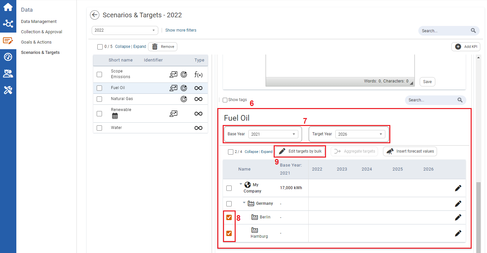
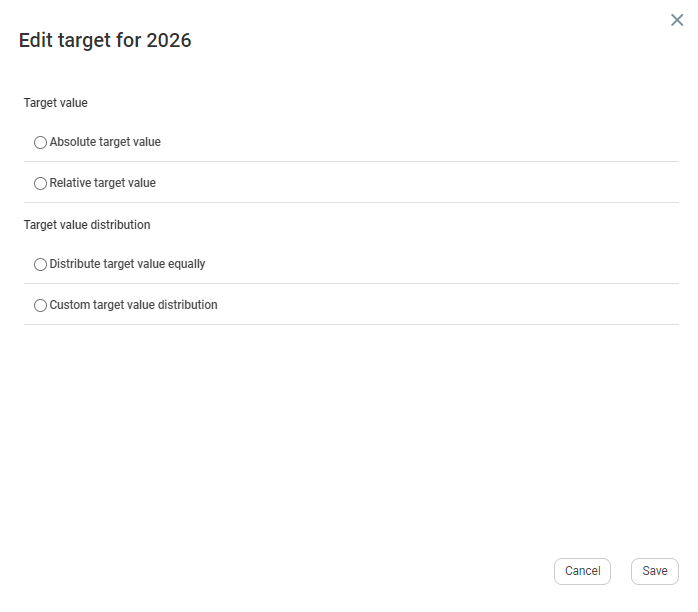
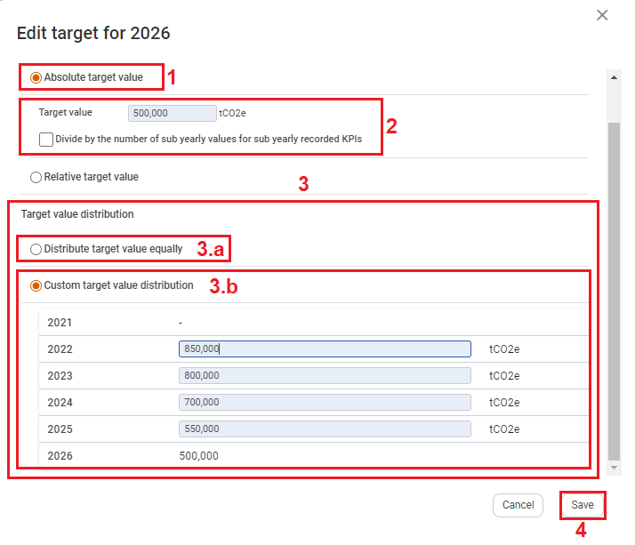
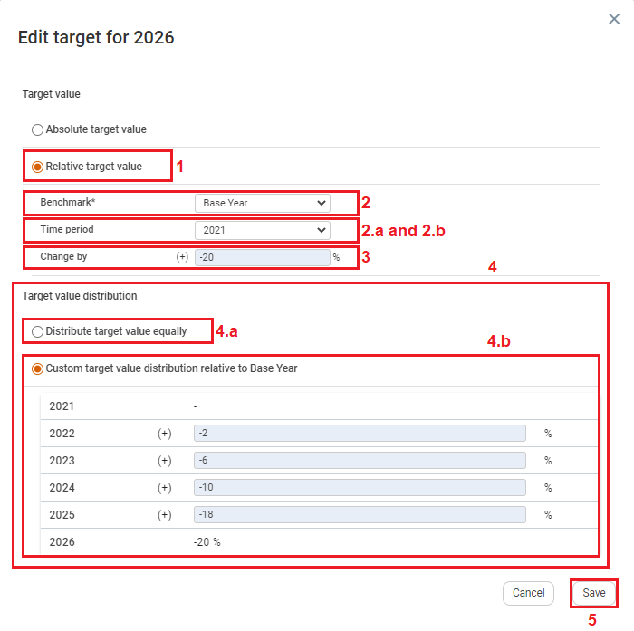

| 1 | On the left navigation panel, click Data. |
| 2 | Click Scenarios & Targets. |
| 3 | Select a numeric or formula KPI. |
| 4 | Information on the KPI is displayed to the right. |
| 5 | Click the Scenarios tab. |

| 6 | Scroll down to the target section of the Scenario. |
| 7 | Select a Base Year for which you have approved values (baseline, etc.) that you are not likely to change, and select a Target Year. Your planning period is from the base year to the target year. |
| 8 | Once you have set the planning period, select more than one organizational unit. |
| 9 | Click Edit targets by bulk. The Edit target window will open. |

When changes are made on the Edit Target window a 'Warning' prompt displays, notifying users that there are unsaved changed.
Targets can either be created as Absolute Target Value, or Relative Target Value.
To Edit Targets using Absolute Target Value

| 1 | On the left On the Target Edit window, under Target value, select Absolute target value. The Target value textbox and Divide by the number of sub yearly values for sub yearly recorded KPIs will display below.navigation panel, click Data. |
| 2 | Input a target value that you want to reach. For example, a company’s fuel oil usage is 850,000 liters per year, and the company wants to reduce this to 500,000 liters per year. 500,000 Liters per year is the Absolute Target. Note: Targets can also be increasing in value such as production targets. Note: You can additionally select “Divide by the number of sub yearly values for sub yearly recorded KPIs”. |
| 3 | Once an Absolute value is determined, you can select a Target value distribution of either Distribute target value equally or Custom target value distribution. |
| 3.a | If Distribute target value equally is selected, the target value is automatically reduced by an equal value each year for the planning period that was predefined. |
| 3.b | If Custom target value distribution is selected, you can input varying target values for each year based on your operational needs and goals. For example: With fuel oil usage, if a company decides to make changes to its fleet of vehicles in the third year reducing petrol consumption, then targets of the first two year maybe slower reduction, with a larger reduction in the third year. |
| 4 | Click Save. |
To Edit Targets using Relative Target Value:

| 1 | On the Target Edit window, under Target value, select Relative target value. |
| 2 | In the Benchmark* dropdown textbox, you can either select Reference Year or a Reference Value. |
| 2.a | If Reference year is selected, the Time Period textbox appears. In the Time Period textbox, enter a base-year benchmark value. In this case 2021 for 850,000 liters of fuel oil used in the year. |
| 2.b | If Reference value is selected, the Value textbox appears. In the Value textbox, enter a benchmark value. In this case 850,000 liters of fuel oil used. |
| 3 | In the Change By textbox, enter the total percentage of reduction over the planning period. For example: -20%. |
| 4 | Once all the Relative value information is inputted, you can select a Target value distribution of either Distribute target value equally or Custom target value distribution. |
| 4.a | If Distribute target value equally is selected, the target value is automatically reduced by an equal percentage value each year for the planning period that was predefined. |
| 4.b | If Custom target value distribution is selected, you can input varying target values percentages for each year based on your operational needs and goals. For example: by 2% year one, 6% year two, 10% year three, 18% year four, then 20% in the target year. |
| 5 | Click Save. |